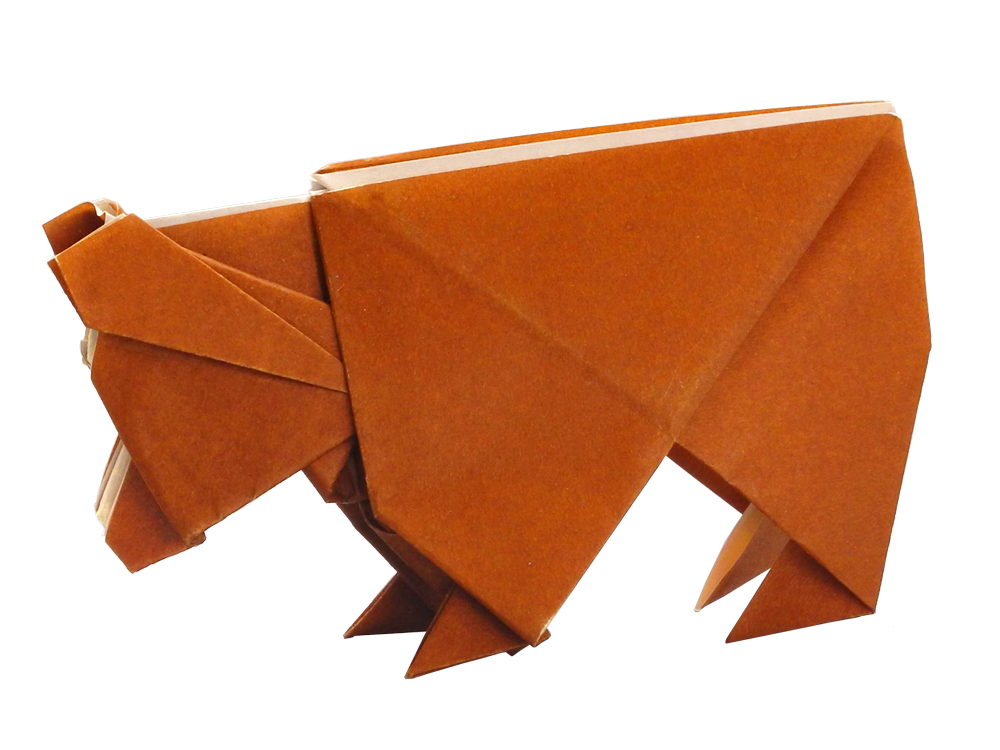
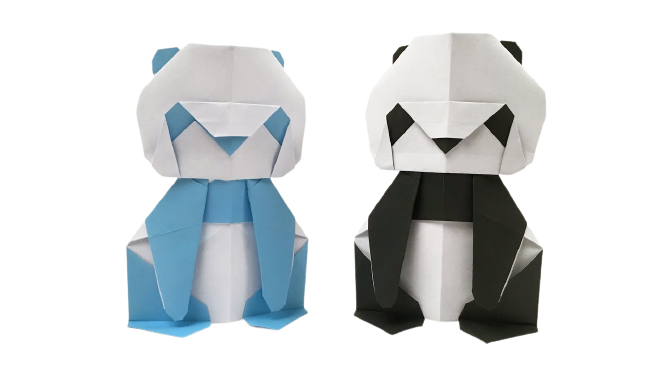
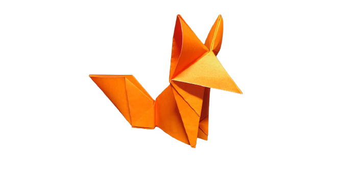

Animal Origamis
by:Irfana
1. Bear

Facts:
- Carnivoran Mammals
- Classified As Caniforms/ Doglike Carnivoran
- Class Is Mammalia
2. Panda

Facts:
- Bear Native to South Centeral China
- Lives 20 Years(Wild Life)
- Spends most day eating
3. Fox

Facts:
- Small To Medium-sized omnivores
- Have Flattened Skull
- Family Called Canidae